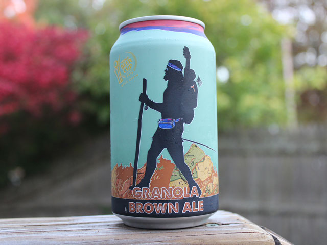

HOME
OUR PICKS
Granola Brown Ale
Black Hog Brewing Company
Brown ale brewed w. a granola mix of oatmeal, grains, hops & roasted malts. Granola brown allows us to have the best of both worlds- a refreshing brew with all the wonders of delicious granola! Take this beer on your next hike or hike one up to your lips for a satisfying energy packed libation.
Located in Oxford, CT, Black Hog Brewing started with the story of food, family, and a love for craft beer. Brothers Jason and Tom Sobocinski come from a Polish/Italian family where food and drink is always the focus of every gathering. When they celebrate, they roast a hog and the Berkshire hog is the breed of choice, thus Black Hog brewing was born!
Check out their site HERE 